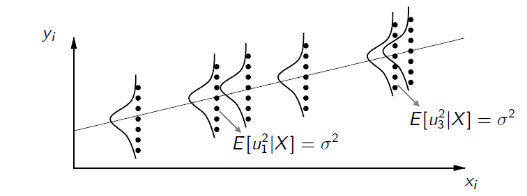
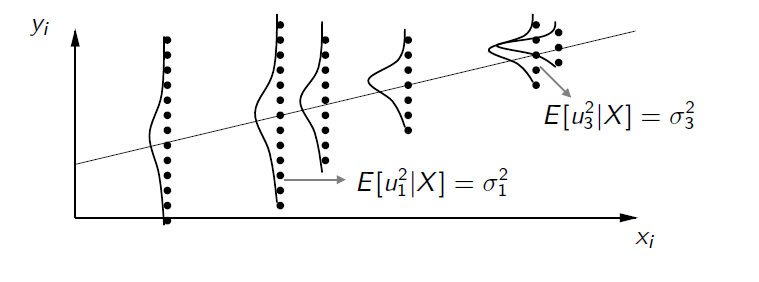

Clase 5 · Propiedades estadísticas del estimador MCO
Contenido oficial de la semana
Esta página reproduce íntegras y en orden las diapositivas de la cátedra del viernes de la
semana 5 (sem5/clase6.tex, 19 láminas). Los bloques Interactivo, los casos y las preguntas
son material adicional para estudiar.
Cómo estudiar esta página
La clase está ordenada en 7 temas. Cada tema parte con una pregunta guía, sigue con las láminas y los simuladores, y termina con ✍️ preguntas de selección múltiple (cada alternativa incorrecta explica por qué no lo es) y, en casi todos, un 🧪 ejercicio de R que puedes editar y ejecutar aquí mismo, sin instalar nada. Los 6 ejercicios de R en un solo archivo: 📥 clase5.R.
🎯 Objetivos de la sesión
- Enunciar los cinco supuestos clásicos del modelo de regresión múltiple y reconocer cuándo se violan.
- Demostrar que, bajo los supuestos 1 a 4, \(\hat{\beta}\) es insesgado.
- Obtener la matriz de varianzas y covarianzas \(\text{Var}(\hat{\beta} \mid X) = \sigma^2 (X^\top X)^{-1}\) y estimarla con \(\hat{\sigma}^2\).
- Calcular e interpretar los errores estándar de cada \(\hat{\beta}_j\).
🗓️ Agenda de la cátedra (viernes 18:40 – 21:25)
Haz clic en un tema para ir directo a él.
- 18:401¿Qué hace bueno a un estimador?láminas 1–2 · ✍️ 2 preguntas
- 19:002Supuestos 1 a 3: linealidad, muestra aleatoria e identificaciónláminas 3–5 · ✍️ 2 preguntas · 🧪 R
- 19:253Supuesto 4: ortogonalidad, el supuesto críticoláminas 6–7 · ✍️ 2 preguntas · 🧪 R
- 19:404Supuesto 5: homocedasticidad, y el resumenláminas 8–10 · ✍️ 2 preguntas · 🧪 R
- 19:55☕ Receso
- 20:055Insesgamiento y varianza de β̂láminas 11–13 · ✍️ 2 preguntas · 🧪 R
- 20:356Estimar σ² y los errores estándarláminas 14–18 · ✍️ 2 preguntas · 🧪 R
- 21:057¿Qué hace más preciso a β̂?lámina 19 · ✍️ 2 preguntas · 🧪 R
- 21:20✅ Ideas clave, autoevaluación y cierre
Propiedades estadísticas del estimador MCO
📄 Diapositivas: sem5/clase6.tex · 19 láminas
¿Qué hace bueno a un estimador?
Ya sabemos calcular β̂. ¿Cómo sabemos si es un buen estimador de β?
Resumen clase anterior
-
Vimos la forma matricial del modelo de regresión lineal múltiple: \(y = X\beta + u\)
-
Demostramos que por MCO se puede obtener: \(\hat{\beta} = \begin{bmatrix} \hat{\beta}_0 \\ \hat{\beta}_1 \\ \hat{\beta}_2 \\ \vdots \\ \hat{\beta}_k \end{bmatrix} = (X^\top X)^{-1}X^\top y\)
Interpretación \(\hat{\beta}_i\): Cuando cambia \(x_i\) en una unidad, en promedio \(y\) cambia \(\hat{\beta}_i\) unidades, manteniendo todas las demás variables explicativas (\(x_{-i}\)) constantes.
Supuestos Clásicos
¿\(\hat{\beta}\) es un buen estimador para \(\beta\)? ¿Qué significa que sea bueno?
Supuestos clásicos:
-
Linealidad en parámetros
-
Muestra aleatoria
-
Condición de identificación
-
Ortogonalidad
-
Homocedasticidad
✍️ Practica · Tema 1
¿Qué significa que β̂ sea un estimador insesgado de β?
✅ Es lo que se demuestra en la lámina 12.
¿Cuántos supuestos clásicos enumera la lámina 2?
✅ Linealidad, muestra aleatoria, identificación, ortogonalidad y homocedasticidad.
Supuestos 1 a 3: linealidad, muestra aleatoria e identificación
¿Qué le pedimos al modelo, a los datos y a la matriz X?
Supuesto 1: Linealidad en Parámetros
-
La relación poblacional entre las variables sigue un modelo lineal:
\[ y = X \beta + u \quad (1) \]\[ = \beta_0 + \beta_1 x_1 + \beta_2 x_2 + \ldots + \beta_k x_k + u \quad (2) \]donde \(\beta_0, \beta_1, \ldots, \beta_k\) son parámetros desconocidos y \(u\) es una variable no observable llamada término de error o perturbación.
-
Si el modelo analítico no es lineal en los parámetros, hay que linealizarlo, en la medida de lo posible.
-
Por ejemplo:
\[ Y = A K^{\alpha_1} Q^{\alpha_2} L^{\alpha_3} \]se lineariza como
\[ \log Y = \log A + \alpha_1 \log K + \alpha_2 \log Q + \alpha_3 \log L \]
Supuesto 2: Muestra Aleatoria
-
Las \(n\) observaciones provienen de una muestra aleatoria de la población,
\[ \{(x_{i1}, x_{i2}, \ldots, x_{ik}, y_i) : i = 1, 2, \ldots, n\} \] -
Esto significa que las observaciones son independientes unas de otras, lo que implica que
\[ \text{cov}(u_i, u_j|X) = 0 \quad \forall i \neq j \] -
En series de tiempo lo anterior implica que los errores no tienen autocorrelación.
Supuesto 3: Condición de Identificación (No multicolinealidad perfecta)
-
\(X\) tiene rango columna completo \(k + 1\).
-
No hay relaciones lineales exactas entre las variables independientes.
-
Esto implica:
-
Las columnas de \(X\) son linealmente independientes.
-
Existe la inversa de \(X^{\top}X\).
-
\(n \geq k + 1\).
-
Ejemplo de violación a este supuesto: \(x_2 = 2x_1\). La fila 2 es linealmente dependiente de la 1.
✍️ Practica · Tema 2
¿Cuál de estos modelos no es lineal en los parámetros, aunque se pueda linealizar?
✅ La función de producción se linealiza tomando logaritmos (lámina 3).
Incluyes x₂ = 2·x₁ en la regresión. ¿Qué pasa?
✅ Es el ejemplo de violación de la lámina 5. Pruébalo con ρ = 1 en el simulador de multicolinealidad.
🧪 Practica en R · Multicolinealidad perfecta
Construye una variable que es exactamente el doble de otra y mira cómo responden lm() y solve().
set.seed(5)
n <- 50
x1 <- rnorm(n)
x2 <- 2 * x1 # relación lineal exacta: viola el supuesto 3
y <- 1 + 2 * x1 + rnorm(n)
coef(lm(y ~ x1 + x2)) # R no puede estimar x2: entrega NA
X <- cbind(1, x1, x2)
qr(X)$rank # rango 2, no k + 1 = 3
try(solve(t(X) %*% X)) # XᵀX no tiene inversa
🎯 Reto: cambia 2 * x1 por 2 * x1 + rnorm(n, sd = 0.01). ¿Se puede estimar ahora? ¿Qué pasa con los errores estándar?
Supuesto 4: ortogonalidad, el supuesto crítico
¿Por qué este supuesto, y no otro, decide si podemos interpretar β causalmente?
Supuesto 4: Ortogonalidad (Exogeneidad)
-
\(E[u|X] = E(u|x_1, x_2, \ldots, x_k) = 0\).
-
Esto implica que:
-
\(E[X^{\top}u] = 0\): la covarianza entre las \(x\) y el error es cero.
-
\(E(y|X) = E(X\beta + u|X) = X\beta\).
-
Vamos a ver que este supuesto va a ser el supuesto clave para interpretar causalmente los coeficientes.
-
\(E[u|X] = E(u|x_1, x_2, \ldots , x_k) = 0\).
-
Esto implica que:
-
\(E[X^{\top}u] = 0\): la covarianza entre las \(x\) y el error es cero.
-
\(E(y|X) = E(X\beta + u|X) = X\beta\).
-
-
Vamos a ver que este supuesto va a ser el supuesto clave para interpretar causalmente los coeficientes.
-
Este supuesto puede no cumplirse por varias razones:
-
Omisión de una variable que está correlacionada con alguna \(x\).
-
Errores de medición en los regresores.
-
-
Por desgracia, muy pocas veces se sabe con seguridad si el valor promedio de los factores no observables de hecho no está relacionado con las variables explicativas. Pero este es el supuesto crítico.
✍️ Practica · Tema 3
¿Cuál de estas situaciones viola E[u | X] = 0?
✅ Lámina 7: omisión de variables y errores de medición en los regresores.
¿Qué implica E[u | X] = 0 sobre la covarianza entre las x y el error?
✅ Además implica E(y | X) = Xβ.
🧪 Practica en R · Lo que pasa cuando falla el supuesto 4
La habilidad queda en el error y se relaciona con la educación. Compara la regresión con y sin ella.
set.seed(4)
n <- 2000
habilidad <- rnorm(n) # no la observamos
educ <- 12 + 2 * habilidad + rnorm(n) # se relaciona con la educación
salario <- 1 + 0.5 * educ + 1 * habilidad + rnorm(n)
coef(lm(salario ~ educ)) # habilidad en u: E[u | X] ≠ 0
coef(lm(salario ~ educ + habilidad)) # si pudiéramos incluirla: ≈ 0.5
cor(educ, habilidad)
🎯 Reto: cambia 2 * habilidad por 0 * habilidad en la educación. ¿Sigue habiendo sesgo?
Supuesto 5: homocedasticidad, y el resumen
¿Importa que el ruido sea más grande para algunas personas que para otras?
Supuesto 5: Homocedasticidad y no autocorrelación
-
La varianza del error no depende de \(X\):
\[ \text{Var}(u_i|x_1, \ldots , x_k) = E[u_i^2|x] = \sigma^2 \] -
En caso de que el supuesto no se cumpla, se dice que el modelo presenta heterocedasticidad.
-
Ejemplo donde no se cumpliría esta condición: si tenemos salario en función de años de escolaridad, la varianza de \(u\) es probablemente menor para escolaridades pequeñas.
-
Con esto, la varianza condicional del vector \(u\) queda: \(\text{Var}(u|X) = \sigma^2I\).
-
La covarianza de los errores es cero:
\[ \text{Covar}(u_i,u_j|x_1, \ldots , x_k) = 0 \]
Supuesto 5: Homocedasticidad
-
Homocedasticidad en un modelo simple (mismo \(\sigma\)).

-
Heterocedasticidad en un modelo simple.

Resumen Supuestos
-
Linealidad en parámetros (\(y = X\beta + u\)).
-
Muestra aleatoria.
-
\(X\) tiene rango completo (\(k+1\)), es decir, todas las variables son linealmente independientes.
-
Ortogonalidad: \(E[u|X] = 0\).
-
Homocedasticidad y no-autocorrelación: \(V(u|X) = \sigma^2I\)
✍️ Practica · Tema 4
Var(u | X) = σ²I significa que…
✅ Homocedasticidad (diagonal constante) y no autocorrelación (fuera de la diagonal, ceros).
En la lámina 9, ¿qué distingue el gráfico de heterocedasticidad?
✅ Con homocedasticidad la nube tiene el mismo ancho para todo x.
🧪 Practica en R · El abanico de la heterocedasticidad
Simula salarios cuya varianza crece con la educación (el ejemplo de la lámina 8) y grafica los residuos.
set.seed(8)
n <- 300
educ <- runif(n, 6, 20)
u <- rnorm(n, sd = 0.4 * educ) # la varianza crece con la educación
salario <- 2 + 0.8 * educ + u
m <- lm(salario ~ educ)
plot(educ, resid(m), pch = 19, col = "steelblue",
main = "Residuos: el abanico se abre", ylab = "residuo")
abline(h = 0, lty = 2)
tapply(resid(m), cut(educ, 3), sd) # dispersión por tramo de educación
🎯 Reto: cambia sd = 0.4 * educ por sd = 4. ¿Cómo se ve ahora el gráfico de residuos?
Insesgamiento y varianza de β̂
¿Acierta MCO en promedio? ¿Y cuánto se equivoca de muestra en muestra?
Propiedades Estadísticas de los Estimadores \(\hat{\beta}\)
Bajo los supuestos clásicos, los estimadores MCO cumplen lo siguiente:
-
\(\hat{\beta}\) es insesgado: \(E(\hat{\beta}) = \beta\).
-
\(V(\hat{\beta}|X) = (X^{\top}X)^{-1}\sigma^2\).
-
Teorema de Gauss-Markov: \(\hat{\beta}\) es el estimador lineal insesgado de menor varianza (MELI-BLUE).
El Estimador MCO es Insesgado
-
Teorema: Bajo los supuestos 1 a 4, el estimador MCO de \(\beta\) es insesgado.
-
Demostración:
$$ \begin{aligned} \hat{\beta} &= (X^{\top}X)^{-1}X^{\top}y \quad \text{(3)} \ &= (X^{\top}X)^{-1}X^{\top}(X\beta + u) \quad \text{(4)} \ &= \beta + (X^{\top}X)^{-1}X^{\top}u \quad \text{(5)} \ E(\hat{\beta}|X) &= \beta + (X^{\top}X)^{-1}X^{\top}E(u|X) \quad \text{(6)} \ &= \beta \quad \text{(7)}
\end{aligned} $$
-
Esto implica que el promedio de los estimadores \(\hat{\beta}\) obtenidos con todas las muestras aleatorias posibles es igual a \(\beta\).
Varianza del Estimador MCO
-
Teorema: Bajo los supuestos 1 a 5, la varianza del estimador MCO de \(\beta\) es \(\text{Var}(\hat{\beta}|X) = \sigma^2(X^{\top}X)^{-1}\).
-
Demostración:
$$ \begin{aligned} \text{Var}(\hat{\beta}|X) &= E[(\hat{\beta} - E(\hat{\beta}))(\hat{\beta} - E(\hat{\beta}))^{\top}|X] \quad \text{(8)} \ &= E[(\hat{\beta} - \beta)(\hat{\beta} - \beta)^{\top}|X] \quad \text{(9)} \ &= E[(X^{\top}X)^{-1}X^{\top}u \, u^{\top}X(X^{\top}X)^{-1}|X] \quad \text{(10)} \ &= (X^{\top}X)^{-1}X^{\top}E[u \, u^{\top}|X]X(X^{\top}X)^{-1} \quad \text{(11)} \ &= (X^{\top}X)^{-1}X^{\top}\sigma^2IX(X^{\top}X)^{-1} \quad \text{(12)} \ &= \sigma^2(X^{\top}X)^{-1}(X^{\top}X)(X^{\top}X)^{-1} \quad \text{(13)} \ &= \sigma^2(X^{\top}X)^{-1} \quad \text{(14)}
\end{aligned} $$
-
nota: \(\hat{\beta}=\beta+(X^{T}X)^{-1}X^{T}u\)
✍️ Practica · Tema 5
¿Qué supuestos se usan para demostrar que β̂ es insesgado?
✅ Lámina 12: el paso (6) usa E(u | X) = 0.
En la demostración de la varianza, ¿en qué paso se usa la homocedasticidad?
✅ Lámina 13, paso (12).
🧪 Practica en R · Insesgamiento y σ²(XᵀX)⁻¹ por simulación
Deja X fija, genera 5 000 muestras de y y compara el promedio y la varianza de β̂ con lo que dicen las láminas 12 y 13.
set.seed(12)
n <- 50
sigma <- 2
X <- cbind(1, x1 = rnorm(n), x2 = rnorm(n)) # X fija entre muestras
beta <- c(1, 2, 1.5)
b_hat <- replicate(5000, {
y <- X %*% beta + rnorm(n, sd = sigma)
drop(solve(t(X) %*% X) %*% t(X) %*% y) # (XᵀX)⁻¹Xᵀy
})
rowMeans(b_hat) # ≈ (1, 2, 1.5): insesgado (lámina 12)
round(var(t(b_hat)), 4) # varianza simulada
round(sigma^2 * solve(t(X) %*% X), 4) # σ²(XᵀX)⁻¹ (lámina 13)
🎯 Reto: cambia sigma <- 2 por sigma <- 4. ¿Cuánto crece la varianza? ¿Cambia el promedio?
Estimar σ² y los errores estándar
σ² no se observa. ¿Cómo obtenemos, entonces, la precisión de cada β̂ⱼ?
Estimador MCO de \(\sigma^2\)
La matriz de varianzas-covarianzas viene dada por:
Notar que \((X^{\top}X)^{-1}\) es una matriz que se observa en los datos.
Pero, \(\sigma^2\) es la varianza del error poblacional. NO es observable.
El estimador \(\hat{\sigma}^2\) de \(\sigma^2\):
-
El término n - k - 1 son los grados de libertad (gl) para el problema general de MCO con n observaciones y k variables independientes.
-
Como en un modelo de regresión con k variables independientes y un intercepto hay k + 1 parámetros.
-
gl = (observaciones) - (cantidad de parámetros estimados).
-
Bajo los supuestos del teorema de Gauss-Markov se cumple que \(E[\hat{\sigma}^2|X] = \sigma^2\).
Varianza Estimada de Cada Estimador \(\hat{\beta}_j\)
Matriz de \((k + 1) \times (k + 1)\) de varianzas-covarianzas, tal que:
-
El elemento de la diagonal \(a_{1,1}\) es \(\hat{\text{Var}}(\hat{\beta}_0)\).
-
El elemento de la diagonal \(a_{2,2}\) es \(\hat{\text{Var}}(\hat{\beta}_1)\).
-
Generalizando: el elemento de la diagonal \(a_{j+1,j+1}\) es \(\hat{\text{Var}}(\hat{\beta}_j)\).
Varianza del Estimador MCO: Ejemplo
-
Supuestos clásicos \(\Rightarrow \hat{V}(\hat{\beta}|X) = \hat{\sigma}^2(X^{\top}X)^{-1}\).
-
De los datos obtenemos:
\[ (X^{\top}X)^{-1} = \begin{bmatrix} 0.05987 & -0.00177 & -0.00035 \\ -0.00177 & 0.00030 & -0.00002 \\ -0.00035 & -0.00002 & 0.00001 \\ \end{bmatrix}; \]\[ \hat{\sigma}^2 = \frac{SSR}{n-k-1} =141925 \]
-
Supuestos clásicos \(\Rightarrow \hat{V}(\hat{\beta}) = \hat{\sigma}^2(X^{\top}X)^{-1}\).
-
De los datos obtenemos:
\[ (X^{\top}X)^{-1} = \begin{bmatrix} 0.05987 & -0.00177 & -0.00035 \\ -0.00177 & 0.00030 & -0.00002 \\ -0.00035 & -0.00002 & 0.00001 \\ \end{bmatrix}; \quad \hat{\sigma}^2 = 141925 \] -
Entonces, podemos calcular:
\[ \hat{V}(\hat{\beta}) = \hat{\sigma}^2(X^{\top}X)^{-1} = \begin{bmatrix} 8497.57 & -250.80 & -49.04 \\ -250.80 & 42.90 & -3.22 \\ -49.04 & -3.22 & 0.91 \\ \end{bmatrix} \] -
En la diagonal principal, tienen la varianza de cada uno de los estimadores.
-
Ejemplo: \(\hat{V}(\hat{\beta}_1) = 42.6\). Es decir, los \(\hat{se}(\hat{\beta}_1) = \sqrt{\hat{V}(\hat{\beta}_1)} = 6.53\)
Complemento · ¿Por qué 42.6 y 42.90?
La matriz \((X^\top X)^{-1}\) de la lámina está redondeada a cinco decimales: \(141\,925 \times 0.00030 = 42.58\), que la lámina aproxima a \(42.6\) y da \(\hat{se}(\hat{\beta}_1) = 6.53\). Con la matriz sin redondear se obtiene \(42.90\) y \(6.55\), el error estándar que reporta Stata para la misma regresión (salario en educación e IQ, \(n = 935\)) en la lámina 13 de la Clase 7.
✍️ Practica · Tema 6
Con n = 935 y k = 2 variables explicativas, ¿cuántos grados de libertad tiene σ̂²?
✅ gl = n − k − 1 = 935 − 2 − 1 = 932 (lámina 15).
En V̂(β̂) = σ̂²(XᵀX)⁻¹, ¿dónde está la varianza de β̂₁?
✅ Lámina 16: el elemento a(j+1, j+1) es la varianza de β̂ⱼ.
🧪 Practica en R · Errores estándar a mano
Reproduce la matriz de la lámina 18 y, después, calcula σ̂² y los errores estándar a mano en una regresión simulada.
# 1) Con los números de las láminas 17 y 18
XtX_inv <- matrix(c( 0.05987, -0.00177, -0.00035,
-0.00177, 0.00030, -0.00002,
-0.00035, -0.00002, 0.00001), 3, 3, byrow = TRUE)
V <- 141925 * XtX_inv
round(V, 2)
sqrt(diag(V)) # errores estándar
# 2) Con datos simulados: σ̂² = SSR / (n − k − 1)
set.seed(16)
n <- 100
x1 <- rnorm(n)
x2 <- rnorm(n)
y <- 1 + 2 * x1 + 1.5 * x2 + rnorm(n, sd = 3)
m <- lm(y ~ x1 + x2)
X <- model.matrix(m)
sigma2_hat <- sum(resid(m)^2) / (n - 2 - 1)
c(a_mano = sigma2_hat, lm = summary(m)$sigma^2)
cbind(a_mano = sqrt(diag(sigma2_hat * solve(t(X) %*% X))),
lm = coef(summary(m))[, "Std. Error"])
🎯 Reto: cambia sd = 3 por sd = 6 en la línea de y. ¿Cuánto cambian los errores estándar?
¿Qué hace más preciso a β̂?
Si pudieras diseñar tu estudio, ¿qué cambiarías para estimar β con más precisión?
El Caso Particular de Regresión con una Sola Variable Independiente
En el modelo de regresión simple \(y = \beta_0 + \beta_1 x + u\), sigue cumpliéndose lo anterior.
-
Si \(x\) tiene más variabilidad, hace que \(\hat{\beta}\) sea más preciso (tengo más información).
-
Si la varianza del residuo es más grande, mi estimador es menos preciso. Mi modelo no explica mucho de \(y\).
✍️ Practica · Tema 7
¿Cuál de estos cambios hace menos preciso a β̂₁?
✅ Lámina 19: si la varianza del residuo es más grande, el estimador es menos preciso.
Dos estudios estiman el retorno a la educación. En el A todos tienen entre 11 y 13 años de estudio; en el B, entre 6 y 20. ¿Cuál será más preciso (con igual n y σ²)?
✅ Más variabilidad en x, más información (lámina 19).
🧪 Practica en R · Tres formas de ganar precisión
Compara el error estándar de β̂₁ al aumentar la variación de x, el ruido y el tamaño muestral.
set.seed(19)
se_beta1 <- function(n, sd_x, sigma) {
x <- rnorm(n, sd = sd_x)
y <- 1 + 2 * x + rnorm(n, sd = sigma)
coef(summary(lm(y ~ x)))["x", "Std. Error"]
}
round(c(base = se_beta1(100, 1, 2),
mas_variacion_x = se_beta1(100, 3, 2),
mas_ruido = se_beta1(100, 1, 6),
mas_datos = se_beta1(400, 1, 2)), 3)
🎯 Reto: ¿cuántas observaciones necesitas para que el error estándar sea la mitad que en base? Pruébalo.
🧠 Ideas clave
- Los supuestos clásicos: linealidad, muestra aleatoria, identificación (rango completo), ortogonalidad \(E[u \mid X] = 0\) y homocedasticidad \(V(u \mid X) = \sigma^2 I\).
- Con los supuestos 1 a 4, \(\hat{\beta}\) es insesgado; la ortogonalidad es el supuesto crítico.
- Con los supuestos 1 a 5, \(\text{Var}(\hat{\beta} \mid X) = \sigma^2 (X^\top X)^{-1}\), y por Gauss-Markov MCO es el estimador lineal insesgado de menor varianza.
- Como \(\sigma^2\) no se observa, se usa \(\hat{\sigma}^2 = SSR/(n-k-1)\); la raíz de la diagonal de \(\hat{\sigma}^2 (X^\top X)^{-1}\) da los errores estándar.
✅ Autoevaluación
Con heterocedasticidad (y los supuestos 1 a 4 cumplidos), ¿qué le pasa a β̂?
✅ Míralo en el laboratorio de supuestos: el histograma sigue centrado en 2.
Con σ̂² = 141 925 y un elemento diagonal de (XᵀX)⁻¹ igual a 0.00030, ¿cuál es el error estándar aproximado?
✅ √(141 925 × 0.00030) = √42.58 ≈ 6.5 (láminas 17 y 18).
¿Qué dice el teorema de Gauss-Markov?
✅ Lámina 11, propiedad 3: MELI o BLUE.
📚 Para la próxima clase
- Wooldridge, capítulo 3, secciones 3.3 a 3.5 (valor esperado y varianza de MCO, teorema de Gauss-Markov).
- 📝 El lunes 16 de noviembre es el Certamen 1 (lectura: Miguel y Kremer, 2004).
- Próxima clase: Interpretación: logaritmos, formas cuadráticas e interacciones.